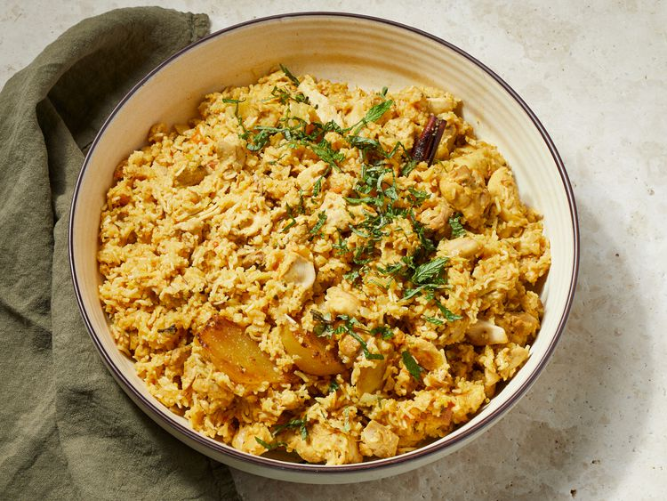

Chicken Biryani

Description
Chicken biryani is a fragrant, layered rice dish that hails from the Indian subcontinent. Tender pieces of chicken are first marinated in a blend of yogurt and warm spices—like turmeric, cumin, coriander, and garam masala—and then seared until golden. Long‑grain basmati rice is par‑cooked with whole spices (cardamom, cloves, cinnamon) and aromatics (onion, garlic, ginger), then layered over the chicken in a heavy pot. The dish is traditionally “dum”‑cooked: the lid is sealed and the heat turned low so the rice finishes cooking in the steam, infusing every grain with rich, savory flavors.
The final biryani is a mosaic of saffron‑tinted rice, juicy chicken, and caramelized onions, garnished with fresh cilantro and mint. Each bite balances heat and sweetness, with a pop of acidity from a side of cooling raita (yogurt sauce) or a crisp cucumber‑tomato salad. It’s a festive centerpiece perfect for gatherings, yet simple enough to become a comforting weeknight treat when you crave something special.
Ingredients
- 4 tablespoons vegetable oil, divided
- 4 small potatoes, peeled and halved
- 2 large onions, finely chopped
- 2 cloves garlic, minced
- 1 tablespoon minced fresh ginger root
- 2 medium tomatoes, peeled and chopped
- 1 teaspoon salt
- 1 teaspoon ground cumin
- ½ teaspoon chili powder
- ½ teaspoon ground black pepper
- ½ teaspoon ground turmeric
- 2 tablespoons plain yogurt
- 2 tablespoons chopped fresh mint leaves
- ½ teaspoon ground cardamom
- 1 (2 inch) piece cinnamon stick
- 3 pounds boneless, skinless chicken pieces cut into chunks
- 1 pound basmati rice
- 2 ½ tablespoons vegetable oil
- 1 large onion, diced
- 5 pods cardamom
- 3 whole cloves
- 1 (1 inch) piece cinnamon stick
- ½ teaspoon ground ginger
- 1 pinch powdered saffron
- 4 cups chicken stock
- 1 ½ teaspoons salt
Steps
- Heat 2 tablespoons of oil in a large skillet. Fry potatoes in hot oil until lightly browned, about 3 to 5 minutes. Remove to a paper towel-lined plate to drain; set aside.
- Add remaining 2 tablespoons of oil to the skillet. Add onions, garlic, and fresh ginger; cook and stir until onion is soft and golden. Add tomatoes, salt, cumin, chili powder, pepper, and turmeric; cook, stirring constantly, for 5 minutes.
- Stir in yogurt, mint, ground cardamom, and cinnamon stick. Cover and cook over low heat, stirring occasionally, until tomatoes are cooked to a pulp. It may be necessary to add a little hot water if mixture becomes too dry and starts to stick to the pan.
- Add chicken and stir well to coat. Cover and cook over very low heat until chicken is tender, 35 to 45 minutes. There should only be a little very thick gravy left when chicken is finished cooking. If necessary cook uncovered for a few minutes to reduce the gravy.
- Meanwhile, make the rice: Wash rice well and drain in a colander for at least 30 minutes.
- Heat oil in a large skillet. Add onion; cook and stir until golden. Add cardamom pods, cloves, cinnamon stick, ground ginger, and saffron; stir in rice until coated with spices.
- Heat stock and salt in a medium pot until hot; pour over rice and stir well.
- Add chicken mixture and potatoes; stir gently to combine. Bring to a boil.
- Reduce heat to very low, cover with a tight-fitting lid, and steam for 20 minutes without lifting the lid or stirring.
- Spoon biryani onto a warm serving dish.
Home